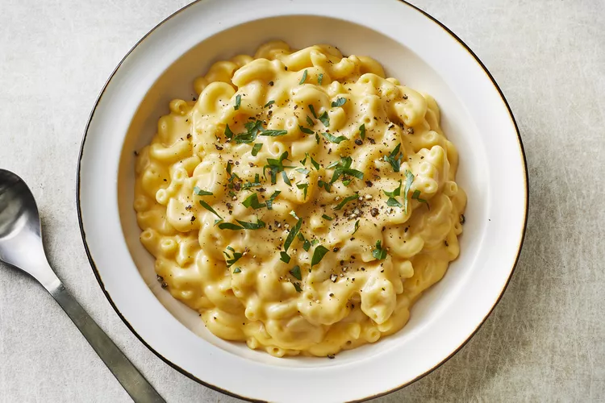

Simple Macaroni and Cheese

A quick and easy Mac and Cheese recipe.
Ingredients
- 1 (8 ounce) box elbow macaroni
- 1/4 cup butter
- 1/4 cup all-purpose flour
- 1/2 teaspoon of salt
- Ground black pepper for taste
- 2 cups milk
- 2 cups shredded Cheddar cheese
Directions
- Bring a large pot of lightly salted water to a boil.
Cook elbow macaroni in the boiling water, stirring occasionally until cooked through but firm to the bite, 8 minutes.
- While cooking the macaroni, melt butter in another saucepan over medium heat.
Add flour, salt, and pepper and stir until smooth, about 5 minutes.
- Pour in milk slowly to the melted butter and flour mix, while stirring continuously.
Continue to cook and stir until mixture is smooth and bubbling, about 5 minutes, making sure the milk doesn't burn.
- Add Cheddar cheese and stir until melted, 2 to 4 minutes.
- Drain macaroni and fold into cheese sauce until coated.
- All done. If you want, you can use more cheese instead of just 2 cups.